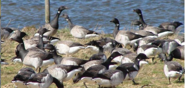
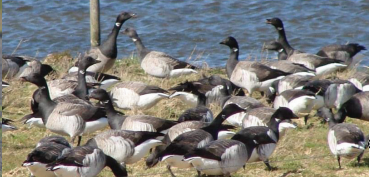

Egholm
Walks along Nørredyb to Låen, where in day is a drainage channel. Previously was here a 60-70-meter-wide water area that divided the island in two parts. The trip is 2.3 km and can be completed in 1 hour at a leisurely pace.

Foxes, hares, hedgehogs, ermines and even otters can also be experienced on the island with a little luck.
 
